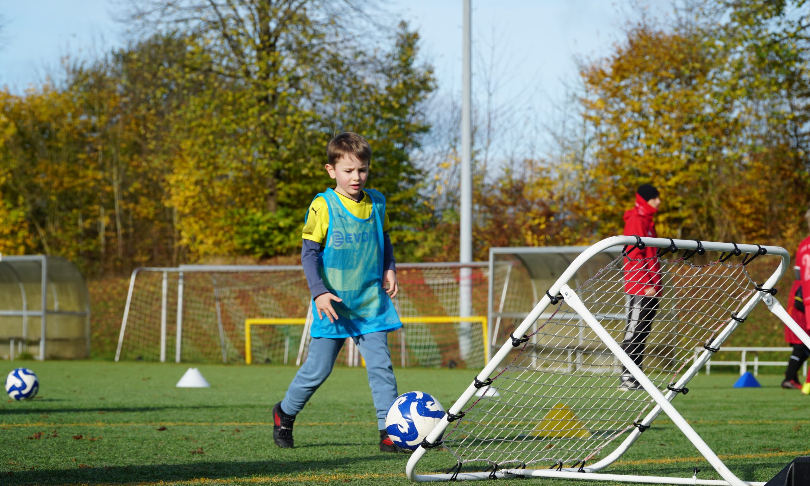

Fußballtraining: Maßgeschneidert und für jedes Level
Die Pro Fußballschule legt besonderen Wert auf die Freude an der Bewegung. Unsere Trainer schaffen ein optimales (Trainings-)Umfeld für dein Kind, in dem es seiner Begeisterung nachgehen und sich optimal entwickeln kann.
Wir betreuen Spielerinnen und Spieler unterschiedlichster Niveaus – von Anfängern, die erste Erfahrungen im Fußball sammeln, bis hin zu Spielern, die sich in den Nachwuchsleistungszentren mit den Besten ihres Alters messen. Wir freuen uns, alle begleiten zu dürfen, die ihre sportliche Entwicklung vorantreiben möchten.
